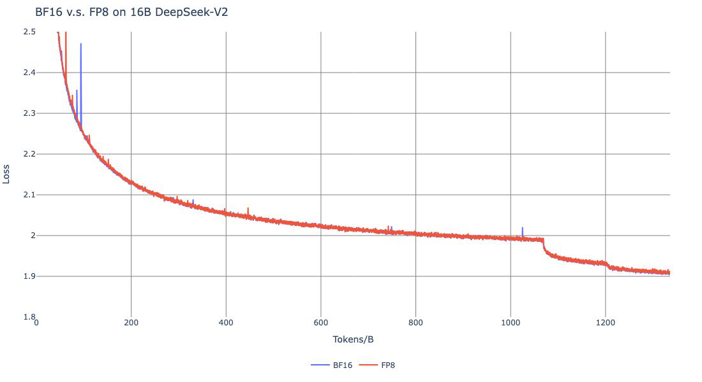
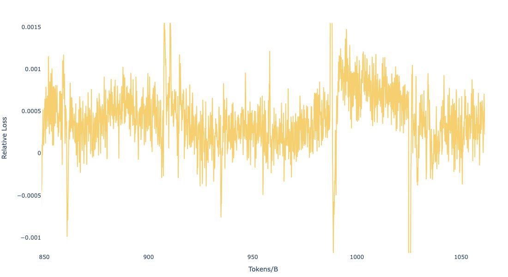
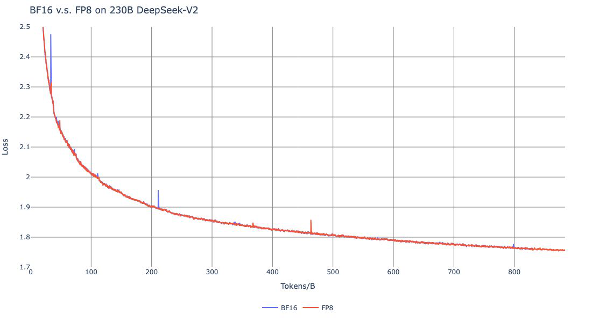
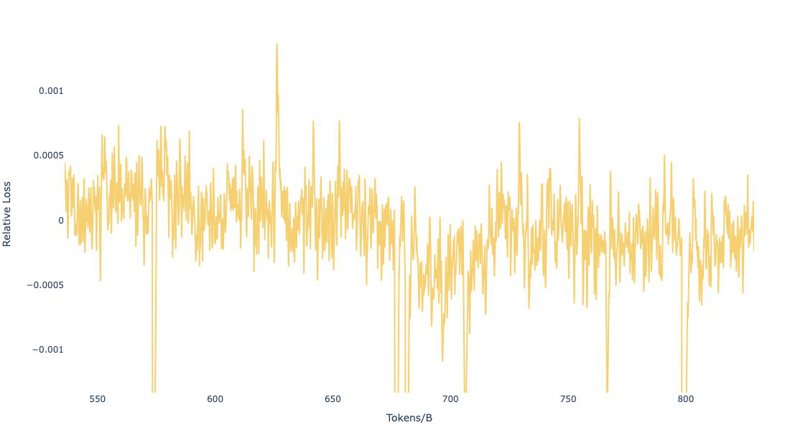

一句话总结:DeepSeek-V3 是一个 671B 总参数 / 每 token 激活 37B 的 MoE 大模型,在 14.8T tokens 上以 2.788M H800·小时(约 $5.6M)的代价完成全量训练,通过 MLA + DeepSeekMoE + 无辅助损失负载均衡 + Multi-Token Prediction + FP8 混合精度这一整套 算法-框架-硬件协同设计,加上从 DeepSeek-R1 蒸馏的推理数据,成为当时最强开源模型,在数学/代码 benchmark 上接近 GPT-4o / Claude-3.5-Sonnet。
🎯 面试考点(高频):
1×128 tile、权重按 128×128 block 各自缩放,避开 outlier 引发的量化误差;(b) promotion to CUDA Core:H800 Tensor Core FP8 累加只有 ~14 位精度,每累加 $N_C=128$ 个元素就搬到 CUDA Core 做 FP32 累加,两个 WGMMA 错开重叠隐藏开销。最终 FP8 vs BF16 相对 loss 误差始终 < 0.25%。
<problem, R1 response> 配 system prompt 教 V3 学到 reflection/verification;非推理数据用 V2.5 生成+人工校。RL 阶段用 GRPO(无 critic,用 group 内 reward 标准化得 advantage):
$$A_i = \frac{r_i - \mathrm{mean}(\{r_1,...,r_G\})}{\mathrm{std}(\{r_1,...,r_G\})}$$
Reward 来源:可验证题目用 rule-based(box/编译器),开放题用 model-based RM(带 CoT 的 preference 数据缓解 reward hacking)。

① 图说明:Appendix B.1 的"小模型尺度"FP8 验证图。在 ~16B 总参的 DeepSeek-V2-Lite-like MoE 上跑 1.33T tokens,蓝线是 BF16 baseline,橙线是 DeepSeek-V3 提出的 FP8 混合精度方案,两条几乎完全重合;只有极少几个早期 spike(<200B tokens 处)且都在两条线上同时出现,属训练随机噪声。
② 关键数据:1300B tokens 训练完后两个版本的 final loss 都收敛到 ~1.91;曲线已用 EMA(系数 0.9)平滑。该图与 fig_2 配合给出 相对误差 < 0.25% 这一论文核心论断的实证。
③ 启示:FP8 训练能稳定到这种程度,核心不是"换数据类型"而是 (1) tile/block-wise fine-grained quantization 抗 outlier、(2) promotion to CUDA Core 弥补 H800 FP8 累加精度仅 14 位、(3) embedding/output head/MoE gating/norm/attention 这些关键算子保留 BF16/FP32。换言之,FP8 真正落地的是一整套数值-硬件协同设计,而不是"全 cast 一遍"。

① 图说明:把 fig_1 后段的 FP8 与 BF16 的 loss 相对差 $(L_\mathrm{FP8}-L_\mathrm{BF16})/L_\mathrm{BF16}$ 放大画出。Y 轴刻度极小,大部分点落在 ±0.001 即 ±0.1%,极值不超过 0.0015(~0.15%)。
② 关键数据:视觉中心略偏 +0.0005——即 FP8 比 BF16 稍微高一点点 loss,但远低于 paper 自报的 0.25% 安全阈值,落入"训练随机性自身波动范围"。
③ 启示:判断 low-precision 训练是否真的"无损",不能只看 loss 曲线重合,要看放大后的相对差分布是否对称、有没有系统性漂移。这里图 2 几乎对称且无明显趋势,是 FP8 方案的关键说服力证据。这也是为什么作者在论文里反复强调 "< 0.25% 相对误差"——它是工程界对 low-precision pre-training 的事实接受门槛。

① 图说明:Appendix B.1 的"大模型尺度"验证,把 fig_1 的实验放大到 ~230B 总参 MoE 上跑 ~0.9T tokens。蓝(BF16)橙(FP8)再次几乎完全重合,final loss ~1.76。
② 关键数据:训练初期(<100B)曲线出现典型的"快速下降-收敛"形态,中后期(200B、450B)BF16 出现两个小 spike,但 FP8 同样跟随且也能恢复,说明数值稳定性不亚于 BF16。230B 是 V3 (671B) 的约 1/3,作者用它给真正全量 V3 训练做先验信心校准。
③ 启示:FP8 训练的"模型越大越显著"——大模型每个 step 涉及更多的 outlier 与更长的累加链,本来更容易因低精度爆炸,但 230B 这一中规模实验显示出方案的可扩展性。这是 DeepSeek 敢直接在 671B 全模型上用 FP8 而不留 BF16 回退方案的关键依据。

① 图说明:对 fig_3 后半段做相对 loss 差放大。绝大多数点落在 ±0.0005(±0.05%)以内,极值约 +0.001。
② 关键数据:与 fig_2(16B 模型)对比,230B 的相对差更紧、更对称、振幅更小——大模型反而比小模型更稳。注意分布中心略略偏 0(可能轻微负偏),说明 FP8 在这一规模上甚至偶尔比 BF16 略好,完全在统计噪声范围内。
③ 启示:大模型每步梯度统计量更平稳、batch 更大,低精度量化误差通过中心极限定理被平均掉,因此 FP8 的相对误差并不随规模放大。这条经验对工业界很重要——若小模型上 FP8 已稳,大模型上一般会更稳,不需要为大模型额外降精度兜底。
DeepSeek-V3 Technical Report DeepSeek-AI research@deepseek.com
We present DeepSeek-V3, a strong Mixture-of-Experts (MoE) language model with 671B total parameters with 37B activated for each token. To achieve efficient inference and cost-effective training, DeepSeek-V3 adopts Multi-head Latent Attention (MLA) and DeepSeekMoE architectures, which were thoroughly validated in DeepSeek-V2. Furthermore, DeepSeek-V3 pioneers an auxiliary-loss-free strategy for load balancing and sets a multi-token prediction training objective for stronger performance. We pre-train DeepSeek-V3 on 14.8 trillion diverse and high-quality tokens, followed by Supervised Fine-Tuning and Reinforcement Learning stages to fully harness its capabilities. Comprehensive evaluations reveal that DeepSeek-V3 outperforms other open-source models and achieves performance comparable to leading closed-source models. Despite its excellent performance, DeepSeek-V3 requires only 2.788M H800 GPU hours for its full training. In addition, its training process is remarkably stable. Throughout the entire training process, we did not experience any irrecoverable loss spikes or perform any rollbacks.
我们提出 DeepSeek-V3——一个总参数 671B、每 token 激活 37B 的强 MoE 语言模型。为实现高效推理与低成本训练,DeepSeek-V3 沿用了在 DeepSeek-V2 上已充分验证的 Multi-head Latent Attention (MLA) 与 DeepSeekMoE 架构。此外,DeepSeek-V3 首创了用于负载均衡的无辅助损失(auxiliary-loss-free)策略,并设置了 multi-token prediction (MTP) 训练目标以获得更强性能。我们在 14.8 万亿 (T) 条多样且高质量的 token 上预训练 DeepSeek-V3,随后通过 SFT 与 RL 两阶段后训练,充分挖掘其能力。综合评测显示 DeepSeek-V3 优于其他开源模型,并取得与领先闭源模型相当的表现。尽管性能出色,DeepSeek-V3 全量训练仅需 2.788M H800 GPU·小时。整个训练过程极其稳定——全程未出现任何不可恢复的 loss spike,也无需任何回滚。
Figure 1 (benchmark snapshot). MMLU-Pro 75.9 (EM); GPQA-Diamond 59.1 (Pass@1); MATH-500 90.2 (EM); AIME 2024 39.2 (Pass@1); Codeforces 51.6 (Percentile); SWE-bench Verified 42.0 (Resolved). Compared peers: DeepSeek-V2.5 (66.2 / 41.3 / 74.7 / 16.7 / 35.6 / 22.6), Qwen2.5-72B-Inst (71.6 / 49.0 / 80.0 / 23.3 / 24.8 / 23.8), Llama-3.1-405B-Inst (73.3 / 51.1 / 73.8 / 23.3 / 25.3 / 24.5), GPT-4o-0513 (72.6 / 49.9 / 74.6 / 9.3 / 23.6 / 38.8), Claude-3.5-Sonnet-1022 (78.0 / 65.0 / 78.3 / 16.0 / 20.3 / 50.8). Model checkpoints: github.com/deepseek-ai/DeepSeek-V3.
图 1(基准成绩速览):DeepSeek-V3 在 MMLU-Pro 75.9、GPQA-Diamond 59.1、MATH-500 90.2、AIME 2024 39.2、Codeforces 百分位 51.6、SWE-bench Verified 42.0。对照:DeepSeek-V2.5(66.2/41.3/74.7/16.7/35.6/22.6)、Qwen2.5-72B-Inst(71.6/49.0/80.0/23.3/24.8/23.8)、Llama-3.1-405B-Inst(73.3/51.1/73.8/23.3/25.3/24.5)、GPT-4o-0513(72.6/49.9/74.6/9.3/23.6/38.8)、Claude-3.5-Sonnet-1022(78.0/65.0/78.3/16.0/20.3/50.8)。除 SWE-bench(Claude 强项)与 GPQA(Claude 第一)外,DeepSeek-V3 基本全面领先,数学项目优势尤为显著(AIME +16 分,MATH-500 +12 分)。Checkpoint 公开在 github.com/deepseek-ai/DeepSeek-V3。
In recent years, Large Language Models (LLMs) have been undergoing rapid iteration and evolution, progressively diminishing the gap towards Artificial General Intelligence (AGI). Beyond closed-source models, open-source models, including DeepSeek series, LLaMA series, Qwen series, and Mistral series, are also making significant strides, endeavoring to close the gap with their closed-source counterparts. To further push the boundaries of open-source model capabilities, we scale up our models and introduce DeepSeek-V3, a large Mixture-of-Experts (MoE) model with 671B parameters, of which 37B are activated for each token.
With a forward-looking perspective, we consistently strive for strong model performance and economical costs. Therefore, in terms of architecture, DeepSeek-V3 still adopts MLA for efficient inference and DeepSeekMoE for cost-effective training. These two architectures have been validated in DeepSeek-V2, demonstrating their capability to maintain robust model performance while achieving efficient training and inference. Beyond the basic architecture, we implement two additional strategies to further enhance the model capabilities. Firstly, DeepSeek-V3 pioneers an auxiliary-loss-free strategy for load balancing, with the aim of minimizing the adverse impact on model performance that arises from the effort to encourage load balancing. Secondly, DeepSeek-V3 employs a multi-token prediction training objective, which we have observed to enhance the overall performance on evaluation benchmarks.
近年来,大语言模型(LLM)正在经历快速迭代与演化,逐步缩小与通用人工智能(AGI)的距离。除闭源模型外,开源模型——包括 DeepSeek 系列、LLaMA 系列、Qwen 系列、Mistral 系列——也在大步前进,努力追赶闭源对手。为进一步推开开源模型能力的边界,我们扩大模型规模,推出 DeepSeek-V3——一个总参数 671B、每 token 激活 37B 的大型 MoE 模型。
本着前瞻视角,我们始终追求"强性能 + 低成本"。因此在架构上,DeepSeek-V3 仍采用 MLA 实现高效推理、DeepSeekMoE 实现低成本训练。这两个架构已在 DeepSeek-V2 中验证,可在保持稳健性能的同时兼顾高效训推。在基础架构之上,我们再叠加两条策略以进一步提升模型能力:① DeepSeek-V3 首创无辅助损失(auxiliary-loss-free)负载均衡策略,以将"鼓励均衡"对性能的负面影响降到最低;② DeepSeek-V3 采用 multi-token prediction (MTP) 训练目标,我们观察到它对评测基准的整体表现有提升。
In order to achieve efficient training, we support the FP8 mixed precision training and implement comprehensive optimizations for the training framework. In this work, we introduce an FP8 mixed precision training framework and, for the first time, validate its effectiveness on an extremely large-scale model. Through the support for FP8 computation and storage, we achieve both accelerated training and reduced GPU memory usage. As for the training framework, we design the DualPipe algorithm for efficient pipeline parallelism, which has fewer pipeline bubbles and hides most of the communication during training through computation-communication overlap. We also develop efficient cross-node all-to-all communication kernels to fully utilize InfiniBand (IB) and NVLink bandwidths, and meticulously optimize the memory footprint, making it possible to train DeepSeek-V3 without using costly tensor parallelism.
为实现高效训练,我们支持 FP8 混合精度训练,并对训练框架做了全面优化。本工作给出一套 FP8 混合精度训练框架,并首次在超大规模模型上验证其有效性——通过支持 FP8 计算与存储,我们同时实现训练加速与 GPU 显存降低。在训练框架方面,我们设计 DualPipe 流水线并行算法,它 pipeline bubble 更少,并通过计算-通信重叠把训练期间的大部分通信"藏"起来;再配合高效的跨节点 all-to-all 通信内核,把 IB 与 NVLink 带宽吃满,并仔细优化显存占用,使 DeepSeek-V3 完全不依赖昂贵的 tensor parallelism 即可完成训练。
During pre-training, we train DeepSeek-V3 on 14.8T high-quality and diverse tokens. The pre-training process is remarkably stable: throughout the entire training process, we did not encounter any irrecoverable loss spikes or have to roll back. Next, we conduct a two-stage context length extension for DeepSeek-V3 — first to 32K, then to 128K. Following this, we conduct post-training, including Supervised Fine-Tuning (SFT) and Reinforcement Learning (RL) on the base model of DeepSeek-V3, to align it with human preferences and further unlock its potential. During the post-training stage, we distill the reasoning capability from the DeepSeek-R1 series of models, and meanwhile carefully maintain the balance between model accuracy and generation length.
Table 1 (training costs, H800 @ $2/GPU·hr). Pre-Training: 2664K GPU·hours = $5.328M; Context Extension: 119K = $0.238M; Post-Training: 5K = $0.01M; Total: 2788K = $5.576M. Training each trillion tokens requires only 180K H800 GPU·hours — i.e., 3.7 days on our 2048-GPU cluster.
预训练阶段,我们在 14.8T 条高质量、多样化 token 上训练 DeepSeek-V3。整个预训练过程极为稳定:全程未出现任何不可恢复的 loss spike,也无需任何回滚。其后,我们对 DeepSeek-V3 做两阶段上下文长度扩展——先 32K,再 128K。在此之后进入后训练阶段:在 DeepSeek-V3 base 模型上做 SFT 与 RL,以对齐人类偏好并进一步释放其潜能。后训练阶段我们从 DeepSeek-R1 系列蒸馏推理能力,并仔细维持"模型精度"与"生成长度"之间的平衡。
表 1(训练成本,H800 按 $2/GPU·小时计):预训练 2664K GPU·小时 = $5.328M;上下文扩展 119K = $0.238M;后训练 5K = $0.01M;合计 2788K = $5.576M。每 1T tokens 仅需 180K H800·小时——在 2048 卡集群上即 3.7 天。
Our main contributions. Architecture: an innovative auxiliary-loss-free load-balancing strategy and a Multi-Token Prediction (MTP) training objective, which is also reusable for speculative decoding. Pre-training: an FP8 mixed-precision training framework — the first time FP8 has been validated at this scale — together with co-designed algorithms / frameworks / hardware that overcome the cross-node MoE communication bottleneck and achieve near-full computation-communication overlap, completing DeepSeek-V3 pre-training on 14.8T tokens at only 2.664M H800 GPU·hours. Post-training: knowledge distillation of reasoning capability from a long-CoT R1 model into a standard LLM, elegantly incorporating R1's verification and reflection patterns into DeepSeek-V3 while controlling output style and length.
Summary of evaluations. Knowledge: MMLU 88.5 / MMLU-Pro 75.9 / GPQA 59.1 — best among open-source, competitive with GPT-4o and Claude-3.5-Sonnet; surpasses both on Chinese SimpleQA. Math: state-of-the-art on math benchmarks among non-long-CoT models — beats o1-preview on MATH-500. Code: top on competition coding (LiveCodeBench); slightly behind Claude-3.5-Sonnet on engineering tasks (SWE-Bench) but well ahead of every other open model.
主要贡献:架构上——首创无辅助损失负载均衡策略,与可复用于 speculative decoding 的 Multi-Token Prediction(MTP)训练目标。预训练上——一套 FP8 混合精度训练框架(首次在如此规模上验证 FP8 可行性),配合算法-框架-硬件协同设计,跨节点 MoE 通信瓶颈被攻克,实现几乎完全的计算-通信重叠,最终以仅 2.664M H800·小时在 14.8T tokens 上完成 DeepSeek-V3 预训练。后训练上——把长 CoT 的 R1 模型的推理能力蒸馏到一个标准 LLM(DeepSeek-V3),把 R1 的"验证 + 反思"模式优雅地植入 V3,同时控制输出风格与长度。
评测速览:知识——MMLU 88.5 / MMLU-Pro 75.9 / GPQA 59.1,开源模型中最佳,与 GPT-4o、Claude-3.5-Sonnet 竞争;在中文 SimpleQA 上超越两者。数学——在所有非 long-CoT 模型中达到 SOTA,MATH-500 上甚至超过 o1-preview。代码——竞赛类(LiveCodeBench)第一;工程类(SWE-Bench)略低于 Claude-3.5-Sonnet,但远超所有其他开源模型。
The basic architecture of DeepSeek-V3 is still within the Transformer framework. For efficient inference and economical training, DeepSeek-V3 also adopts MLA and DeepSeekMoE, which have been thoroughly validated by DeepSeek-V2. Compared with DeepSeek-V2, an exception is that we additionally introduce an auxiliary-loss-free load balancing strategy for DeepSeekMoE to mitigate the performance degradation induced by the effort to ensure load balance. Figure 2 illustrates the basic architecture of DeepSeek-V3, and we will briefly review the details of MLA and DeepSeekMoE in this section.
DeepSeek-V3 的基础架构仍在 Transformer 框架内。为兼顾高效推理与经济训练,DeepSeek-V3 同样采用 MLA 与 DeepSeekMoE——两者已在 DeepSeek-V2 上得到充分验证。与 DeepSeek-V2 的一个区别是:本作额外为 DeepSeekMoE 引入无辅助损失负载均衡策略,以减轻"为保均衡而损失性能"的代价。本节简要回顾 MLA 与 DeepSeekMoE 的细节,整体结构见原文 Figure 2。
For attention, DeepSeek-V3 adopts the MLA architecture. Let $d$ denote the embedding dimension, $n_h$ the number of attention heads, $d_h$ the dimension per head, and $\mathbf{h}_t \in \mathbb{R}^d$ the attention input for the $t$-th token. The core of MLA is the low-rank joint compression for attention keys and values to reduce the KV cache during inference:
where $\mathbf{c}_t^{KV} \in \mathbb{R}^{d_c}$ is the compressed KV latent ($d_c \ll d_h n_h$); $W^{DKV}$ is the down-projection; $W^{UK}, W^{UV}$ are the up-projections for keys/values; and $W^{KR}$ produces a decoupled key that carries the Rotary Positional Embedding (RoPE). During generation, only the blue-boxed vectors $\mathbf{c}_t^{KV}$ and $\mathbf{k}_t^R$ need to be cached, which yields a significantly reduced KV cache while keeping performance comparable to standard Multi-Head Attention (MHA).
For queries we also do low-rank compression to reduce activation memory during training: $\mathbf{c}_t^Q = W^{DQ}\,\mathbf{h}_t$, $\mathbf{q}_t^C = W^{UQ}\,\mathbf{c}_t^Q$, $\mathbf{q}_t^R = \mathrm{RoPE}(W^{QR}\,\mathbf{c}_t^Q)$, $\mathbf{q}_{t,i} = [\mathbf{q}_{t,i}^C;\,\mathbf{q}_{t,i}^R]$. Finally:
注意力层采用 MLA。设 $d$ 为 embedding 维度、$n_h$ 为头数、$d_h$ 为每头维度、$\mathbf{h}_t \in \mathbb{R}^d$ 为第 $t$ 个 token 的注意力输入。MLA 的核心是对 key/value 做低秩联合压缩以缩小推理期的 KV cache:
其中 $\mathbf{c}_t^{KV} \in \mathbb{R}^{d_c}$ 是压缩后的 KV 隐向量($d_c \ll d_h n_h$);$W^{DKV}$ 下投影;$W^{UK}, W^{UV}$ 是 key/value 上投影;$W^{KR}$ 生成承载 RoPE 的解耦 key。生成时只需缓存 $\mathbf{c}_t^{KV}$ 与 $\mathbf{k}_t^R$ 两组向量,KV cache 显著缩小,同时性能与标准 Multi-Head Attention(MHA)相当。
对 query 同样做低秩压缩以降低训练激活显存:$\mathbf{c}_t^Q = W^{DQ}\,\mathbf{h}_t$,$\mathbf{q}_t^C = W^{UQ}\,\mathbf{c}_t^Q$,$\mathbf{q}_t^R = \mathrm{RoPE}(W^{QR}\,\mathbf{c}_t^Q)$,$\mathbf{q}_{t,i} = [\mathbf{q}_{t,i}^C;\,\mathbf{q}_{t,i}^R]$。最终注意力输出为:
For Feed-Forward Networks (FFNs), DeepSeek-V3 employs the DeepSeekMoE architecture. Compared with traditional MoE architectures like GShard, DeepSeekMoE uses finer-grained experts and isolates some experts as shared ones. Let $\mathbf{u}_t$ denote the FFN input of the $t$-th token; the FFN output $\mathbf{h}'_t$ is:
Here $N_s$ and $N_r$ are the numbers of shared / routed experts; $K_r$ is the number of activated routed experts; $\mathbf{e}_i$ is the centroid of the $i$-th routed expert. Different from DeepSeek-V2, V3 uses the sigmoid function to compute affinities and applies normalization among selected affinities to produce the gating values.
Auxiliary-loss-free load balancing. Unbalanced expert load causes routing collapse and degrades efficiency under expert parallelism. Conventional fixes rely on auxiliary loss, but too large an auxiliary loss hurts model quality. To get a better trade-off, we introduce, for each expert, a bias term $b_i$ added to the affinity only for top-K selection:
The bias is used only for routing — the gating value multiplied with the FFN output is still derived from the original $s_{i,t}$. We monitor the whole-batch expert load each step; at step end we decrease $b_i$ by $\gamma$ if expert $i$ is overloaded and increase it by $\gamma$ otherwise, where $\gamma$ is the bias-update speed. To prevent extreme imbalance within any single sequence we additionally keep a tiny sequence-wise balance loss $\mathcal{L}_\mathrm{Bal} = \alpha \sum_i f_i P_i$ with an extremely small $\alpha$. Also: node-limited routing sends each token to at most $M$ nodes; thanks to balanced load, DeepSeek-V3 drops no tokens during training or inference.
FFN 采用 DeepSeekMoE。相比 GShard 等传统 MoE,DeepSeekMoE 使用更细粒度的专家,并把一部分专家固定为共享专家。设第 $t$ 个 token 的 FFN 输入为 $\mathbf{u}_t$,FFN 输出 $\mathbf{h}'_t$ 计算为:
$N_s$、$N_r$ 分别为共享 / 路由专家数;$K_r$ 为每 token 激活的路由专家数;$\mathbf{e}_i$ 是第 $i$ 个路由专家的 centroid 向量。与 DeepSeek-V2 不同,V3 用 sigmoid 计算 affinity 分数,并对被选中的 affinity 做归一化得到 gating 值。
无辅助损失负载均衡。专家负载不均衡会导致 routing collapse 并在 expert parallelism 下削弱算力利用率。传统做法是加 auxiliary loss,但 aux-loss 过大会伤模型性能。为取得更好折中,我们给每个专家引入一个偏置项 $b_i$,仅用于 top-K 选择:
偏置项只参与路由——乘到 FFN 输出上的 gating 值仍由原始 $s_{i,t}$ 决定。训练期间每步监控整个 batch 内各专家负载,步末按速度 $\gamma$ 动态调整:过载则减 $b_i$,欠载则加 $b_i$。为防止单一序列内极端不均衡,我们再保留一个权重极小的 sequence-wise balance loss $\mathcal{L}_\mathrm{Bal} = \alpha \sum_i f_i P_i$($\alpha$ 极小)兜底。另:节点受限路由(node-limited routing)限制每 token 最多发到 $M$ 个节点;得益于均衡到位,DeepSeek-V3 在训练与推理期间均不丢 token。
Inspired by Gloeckle et al. (2024), we set a Multi-Token Prediction (MTP) objective for DeepSeek-V3 that extends the prediction scope to multiple future tokens at each position. On one hand, MTP densifies training signals and may improve data efficiency. On the other hand, MTP may enable the model to pre-plan its representations for better prediction of future tokens. Different from Gloeckle et al., who parallelly predict $D$ additional tokens using independent output heads, we sequentially predict additional tokens and keep the complete causal chain at each prediction depth.
MTP modules. Our implementation uses $D$ sequential modules. The $k$-th MTP module consists of a shared embedding $\mathrm{Emb}(\cdot)$, a shared output head $\mathrm{OutHead}(\cdot)$, a Transformer block $\mathrm{TRM}_k(\cdot)$, and a projection matrix $M_k \in \mathbb{R}^{d\times 2d}$. For the $i$-th input token at the $k$-th depth, we first combine the representation at depth $k{-}1$ with the embedding of token $t_{i+k}$ via a linear projection:
where $[\cdot;\cdot]$ is concatenation; for $k=1$, $\mathbf{h}^{k-1}_i$ refers to the main model. Then $\mathbf{h}^k_{1:T-k} = \mathrm{TRM}_k(\mathbf{h}'^{k}_{1:T-k})$ and $P^k_{i+k+1} = \mathrm{OutHead}(\mathbf{h}^k_i)$. The training loss at depth $k$ is a cross-entropy $\mathcal{L}^k_\mathrm{MTP}$ on tokens $t_{2+k:T+1}$, and the total MTP loss is $\mathcal{L}_\mathrm{MTP} = \frac{\lambda}{D}\sum_{k=1}^D \mathcal{L}^k_\mathrm{MTP}$. At inference, MTP modules can be directly discarded — the main model functions normally; alternatively they can be repurposed for speculative decoding to reduce latency.
受 Gloeckle 等(2024)启发,我们给 DeepSeek-V3 设了一个 Multi-Token Prediction(MTP)目标——把每个位置的预测范围扩展到多个未来 token。这样做一方面致密化训练信号、提升数据效率;另一方面让模型为未来 token 提前规划其表征。与 Gloeckle 等"用独立 output head 并行预测 $D$ 个 token"不同,我们串行预测,保持每个预测深度的完整因果链。
MTP 模块。我们用 $D$ 个串行模块。第 $k$ 个 MTP 模块包含:与主模型共享的 embedding $\mathrm{Emb}(\cdot)$、共享 output head $\mathrm{OutHead}(\cdot)$、一个 Transformer block $\mathrm{TRM}_k(\cdot)$,以及投影矩阵 $M_k \in \mathbb{R}^{d\times 2d}$。第 $k$ 个深度上,先把上一深度的表征与 token $t_{i+k}$ 的 embedding 拼接后线性投影:
$[\cdot;\cdot]$ 表示拼接;当 $k=1$ 时,$\mathbf{h}^{k-1}_i$ 即主模型给出的表征。然后 $\mathbf{h}^k_{1:T-k} = \mathrm{TRM}_k(\mathbf{h}'^{k}_{1:T-k})$,$P^k_{i+k+1} = \mathrm{OutHead}(\mathbf{h}^k_i)$。第 $k$ 深度的训练损失是对 $t_{2+k:T+1}$ 的交叉熵 $\mathcal{L}^k_\mathrm{MTP}$,总 MTP 损失为 $\mathcal{L}_\mathrm{MTP} = \frac{\lambda}{D}\sum_{k=1}^D \mathcal{L}^k_\mathrm{MTP}$。推理时可直接丢弃 MTP 模块、主模型独立运行;也可改作 speculative decoding 的草稿头以降低延迟。
DeepSeek-V3 is trained on a cluster equipped with 2048 NVIDIA H800 GPUs. Each node has 8 GPUs connected by NVLink and NVSwitch within the node; across nodes, InfiniBand (IB) interconnects are used. DeepSeek-V3 applies 16-way Pipeline Parallelism (PP), 64-way Expert Parallelism (EP) spanning 8 nodes, and ZeRO-1 Data Parallelism (DP). We avoid Tensor Parallelism (TP) entirely through careful memory engineering.
DualPipe. Cross-node expert parallelism makes the computation-to-communication ratio about 1:1. We design DualPipe — a pipeline parallelism algorithm that not only accelerates training by overlapping forward and backward computation-communication phases, but also reduces pipeline bubbles. We split each chunk into four components — attention, all-to-all dispatch, MLP, all-to-all combine — and further split backward attention/MLP into "backward for input" vs "backward for weights" (ZeroBubble-style). DualPipe uses a bidirectional schedule that feeds micro-batches from both ends, ensuring both all-to-all and PP communication are fully hidden.
Cross-node all-to-all kernels. NVLink bandwidth is 160 GB/s (~3.2× IB at 50 GB/s). We limit each token to at most 4 nodes (cutting IB traffic). When routing is decided, a token first travels via IB to the GPU with the same in-node index on the target node, then is immediately forwarded via NVLink to the GPU hosting the target expert. IB and NVLink communications are fully overlapped; on average each token can pick 3.2 experts/node — even though only 8 routed experts are activated, this could scale to 13 (4 nodes × 3.2 experts) with the same communication cost. Warp specialization is used with just ~20 SMs reserved for communication.
DeepSeek-V3 在 2048 张 NVIDIA H800 集群上训练。每节点 8 卡,节点内 NVLink + NVSwitch 互联,节点间用 InfiniBand(IB)。整体并行配置:16 路 Pipeline Parallelism(PP)、64 路 Expert Parallelism(EP)(跨 8 节点)、ZeRO-1 Data Parallelism。通过精细显存工程,我们完全不使用 Tensor Parallelism(TP)。
DualPipe。跨节点 expert parallelism 把计算-通信比拉到约 1:1。为此设计 DualPipe——既通过 forward / backward 阶段的计算-通信重叠加速训练,又降低 pipeline bubble。我们把每个 chunk 拆成四段——attention、all-to-all dispatch、MLP、all-to-all combine;backward 中的 attention/MLP 再按 ZeroBubble 方式拆成 "backward for input" 与 "backward for weights"。DualPipe 采用双向调度,从流水线两端同时投喂 micro-batch,使 all-to-all 与 PP 通信均被完全掩盖。
跨节点 All-to-All 内核。NVLink 带宽 160 GB/s(约 IB 50 GB/s 的 3.2×)。我们限制每 token 最多发到 4 个节点(减少 IB 流量)。token 路由确定后,先通过 IB 飞到目标节点上"同 in-node index"的 GPU,然后立刻经 NVLink 转发到承载目标专家的 GPU。IB 与 NVLink 通信完全重叠;每 token 平均可选 3.2 个专家/节点——虽然实际只激活 8 个 routed expert,但同等通信代价下最多可扩到 13 个(4 节点 × 3.2)。结合 warp specialization,通信只占用约 20 个 SM。
Inspired by recent advances in low-precision training, we propose a fine-grained mixed-precision framework using the FP8 data format. Although progress has been made in inference quantization, there are relatively few studies on low-precision pre-training at scale. To address outliers in activations / weights / gradients and effectively extend the dynamic range of FP8, we use a fine-grained quantization strategy: tile-wise grouping of $1\times N_c$ elements (activations) or block-wise grouping of $N_c\times N_c$ elements (weights). The associated dequantization overhead is largely mitigated under an increased-precision accumulation process — a critical aspect for accurate FP8 GEMM. To further reduce memory and communication in MoE training, we cache and dispatch activations in FP8 while storing low-precision optimizer states in BF16. Validated on two model scales similar to DeepSeek-V2-Lite and DeepSeek-V2 over ~1T tokens, our FP8 model's relative loss error vs the BF16 baseline stays consistently below 0.25% — well within training-randomness tolerance.
Mixed precision framework (Figure 6). Most compute-density operations — the three GEMMs of every Linear (Fprop, Dgrad, Wgrad) — run in FP8 with BF16/FP32 outputs, theoretically doubling speed vs BF16. The FP8 Wgrad GEMM also lets us store activations in FP8 for backward, slashing memory. Operators sensitive to low precision (embedding, output head, MoE gating, normalizations, attention) keep BF16/FP32; master weights and optimizer states are kept high precision.
Improved precision from quantization and multiplication. H800 Tensor Cores accumulate FP8 with only ~14-bit mantissa precision. We solve this by promotion to CUDA Core: every $N_C=128$ inner-product elements, partial results are moved from the Tensor Core to the CUDA Core for FP32 accumulation, with two WGMMA stages interleaved to hide overhead. Combined with tile/block-wise scaling, this lets FP8 GEMM match BF16-grade accuracy.
受低精度训练近期进展启发,我们提出基于 FP8 的细粒度混合精度训练框架。推理量化研究已较多,但预训练阶段低精度训练在超大模型上的成熟工作仍然稀缺。为应对 activation/weight/gradient 中的 outlier,扩展 FP8 的动态范围,我们采用细粒度量化(fine-grained quantization):激活按 $1\times N_c$ tile 分组,权重按 $N_c\times N_c$ block 分组,各自独立 scale。配合高精度累加过程,反量化开销被大幅吸收——这是 FP8 GEMM 数值准确的关键。为进一步降低 MoE 训练的显存与通信开销,我们以 FP8 缓存并 dispatch 激活,以 BF16 存储低精度优化器状态。在两个分别类似 DeepSeek-V2-Lite 与 DeepSeek-V2 的尺度上、各跑约 1T tokens 验证:FP8 模型相对 BF16 baseline 的 loss 相对误差始终 < 0.25%,完全在训练随机性可接受范围内。
混合精度框架(对应原论文 Figure 6):所有 Linear 算子的三个 GEMM(Fprop / Dgrad / Wgrad)都跑 FP8,输出 BF16/FP32——理论上 vs BF16 速度翻倍;FP8 Wgrad 还能让前向激活以 FP8 存供反向使用,大幅省内存。对低精度敏感的算子(embedding、output head、MoE gating、normalization、attention)保留 BF16/FP32;master weight 与优化器状态保留高精度。
由量化与乘法获得的精度提升。H800 Tensor Core 的 FP8 累加只有 ~14 位精度。解法是提升到 CUDA Core 累加:每累加 $N_C=128$ 个内积元素,就把部分结果从 Tensor Core 搬到 CUDA Core 做 FP32 累加,两个 WGMMA 阶段交错重叠掩盖开销。结合 tile/block-wise scaling,FP8 GEMM 在精度上接近 BF16。
Low-precision storage and communication; inference and deployment. Activation caching, all-to-all dispatch, and gradient accumulation use low precision where safe; optimizer states use BF16. For inference, prefilling and decoding are deployed separately, with redundant expert deployment to absorb domain-shift load imbalance during inference. Finally, we list hardware design suggestions: communication hardware should support fine-grained scaling factors and FP8/BF16 accumulation at full speed; compute hardware should expose high-precision accumulation as a first-class capability rather than a workaround.
低精度存储与通信、推理与部署。激活缓存、all-to-all dispatch、梯度累加在安全位置改用低精度;优化器状态保留 BF16。推理部署上,prefilling 与 decoding 分别部署,并采用冗余专家(redundant expert deployment)来吸收推理期 domain-shift 引起的负载不均。最后我们给出硬件设计建议:通信硬件应原生支持细粒度 scaling factor 与 FP8/BF16 全速累加;计算硬件应把"高精度累加"作为一等公民暴露,而非靠 workaround。
Compared with DeepSeek-V2, we optimize the pre-training corpus by enhancing the ratio of mathematical and programming samples, while expanding multilingual coverage beyond English and Chinese. Our data processing pipeline is refined to minimize redundancy while maintaining diversity. We use the document-packing method for data integrity but do not apply cross-sample attention masking during training. The final corpus contains 14.8T high-quality and diverse tokens under our tokenizer.
We adopt the Fill-in-Middle (FIM) strategy following DeepSeekCoder-V2, using the Prefix-Suffix-Middle (PSM) framework: <|fim_begin|> f_pre <|fim_hole|> f_suf <|fim_end|> f_middle <|eos_token|>. FIM is applied document-level during pre-packing at rate 0.1. The tokenizer uses Byte-level BPE with a 128K vocabulary, and its pretokenizer adds tokens that combine punctuations and line breaks; to mitigate the "token-boundary bias" this could cause on few-shot prompts without trailing newlines, we randomly split a fraction of such combined tokens during training.
相比 DeepSeek-V2,本次预训练语料提高数学与编程样本比例,并把多语种覆盖扩展到英中以外。数据处理管线经过 refinement,既减冗余又保持多样性。采用 document-packing 保持文档完整性,训练时不使用跨样本 attention mask。最终语料 14.8T 条高质多样 token(在我们的 tokenizer 下)。
沿用 DeepSeekCoder-V2 的 Fill-in-Middle(FIM) 策略——用 PSM(Prefix-Suffix-Middle)框架:<|fim_begin|> f_pre <|fim_hole|> f_suf <|fim_end|> f_middle <|eos_token|>;在 pre-packing 时按文档级 0.1 比例应用。Tokenizer 使用 byte-level BPE、128K 词表;新增"标点+换行"组合 token,但这会在 few-shot prompt 末尾无换行时引入token boundary bias,我们在训练中随机切分一部分这种组合 token 以缓解。
Model hyper-parameters. Transformer layers $L=61$, hidden dim $d=7168$, init std $0.006$. MLA: $n_h=128$, per-head $d_h=128$, KV-compression $d_c=512$, query-compression $d'_c=1536$, decoupled-RoPE per-head $d^R_h=64$. All FFNs except the first 3 layers are MoE: each MoE has 1 shared expert + 256 routed experts, each expert's intermediate dim is 2048; 8 routed experts activated per token; each token is sent to at most 4 nodes. MTP depth $D=1$ (i.e., predict 1 extra token). Extra RMSNorms after compressed latents and extra scaling factors at width bottlenecks are also used (as in DeepSeek-V2). Total parameters: 671B; activated per token: 37B.
Training hyper-parameters. AdamW: $\beta_1=0.9$, $\beta_2=0.95$, weight_decay $=0.1$. Max sequence length 4K. LR schedule: linear warmup from 0 to $2.2\times10^{-4}$ in 2K steps; hold $2.2\times10^{-4}$ until 10T tokens; cosine-decay to $2.2\times10^{-5}$ over 4.3T tokens; final 500B tokens at $2.2\times10^{-5}$ for the first 333B and $7.3\times10^{-6}$ for the remaining 167B. Grad-clip 1.0. Batch size: ramp from 3072 to 15360 in the first 469B tokens, then constant 15360. Node-limited routing $M=4$. Auxiliary-loss-free bias-update speed $\gamma=0.001$ for the first 14.3T, then $0$. Balance-loss $\alpha=0.0001$. MTP loss weight $\lambda=0.3$ (first 10T) then $0.1$ (remaining 4.8T).
模型超参:Transformer 层数 $L=61$;hidden 维度 $d=7168$;参数初始化 std $0.006$。MLA:$n_h=128$、每头 $d_h=128$、KV 压缩 $d_c=512$、Query 压缩 $d'_c=1536$、解耦 RoPE 每头 $d^R_h=64$。除前 3 层外所有 FFN 都替换为 MoE:每个 MoE 含 1 个共享专家 + 256 个 routed 专家,每专家中间维度 2048;每 token 激活 8 个 routed 专家;每 token 最多发到 4 个节点。MTP 深度 $D=1$(即额外预测 1 个 token)。压缩 latent 后加额外 RMSNorm、宽度瓶颈处再乘 scaling 因子(沿用 V2)。总参 671B,每 token 激活 37B。
训练超参:AdamW:$\beta_1=0.9$、$\beta_2=0.95$、weight_decay $=0.1$;最大序列长 4K。学习率调度——前 2K 步从 0 线性升到 $2.2\times10^{-4}$;持平至消耗 10T tokens;在 4.3T tokens 内按 cosine 衰减到 $2.2\times10^{-5}$;最后 500B tokens 前 333B 保持 $2.2\times10^{-5}$、后 167B 切换至 $7.3\times10^{-6}$。梯度裁剪 1.0。batch size:前 469B tokens 内由 3072 升至 15360,之后稳定 15360。节点受限 $M=4$。无辅助损失负载均衡的 bias 更新速度 $\gamma=0.001$(前 14.3T),其后置 0。balance loss $\alpha=0.0001$。MTP 损失权重 $\lambda=0.3$(前 10T)→ $0.1$(剩余 4.8T)。
We adopt a DeepSeek-V2-style approach: after pre-training, apply YaRN for context extension in two phases of 1000 steps each, expanding the context window from 4K → 32K → 128K. YaRN is applied exclusively to the decoupled shared key $\mathbf{k}^R_t$. Hyper-parameters: scale $s=40$, $\alpha=1$, $\beta=32$, scaling factor $\sqrt{t} = 0.1\ln s + 1$. Phase 1: seq-len 32K, batch 1920. Phase 2: seq-len 128K, batch 480. Learning rate $7.3\times10^{-6}$ for both. After this two-phase extension, DeepSeek-V3 handles inputs up to 128K while maintaining strong performance; the Needle-In-A-Haystack (NIAH) test (after SFT) shows consistent robustness across all context lengths up to 128K.
我们沿用 DeepSeek-V2 路线:预训练完成后用 YaRN 做两阶段、各 1000 步的上下文扩展,窗口由 4K → 32K → 128K。YaRN 只作用于解耦的共享 key $\mathbf{k}^R_t$。超参:scale $s=40$、$\alpha=1$、$\beta=32$、scaling factor $\sqrt{t} = 0.1\ln s + 1$。第 1 阶段:序列长 32K、batch 1920;第 2 阶段:序列长 128K、batch 480;两阶段学习率均为 $7.3\times10^{-6}$。两阶段扩展后,DeepSeek-V3 可处理最长 128K 输入并保持强性能;SFT 后在 Needle-In-A-Haystack(NIAH)测试中,从 2K 到 128K 全窗口稳定。
We compare DeepSeek-V3-Base with the state-of-the-art open-source base models — DeepSeek-V2-Base, Qwen2.5 72B Base, and LLaMA-3.1 405B Base — using our internal evaluation framework with the same evaluation setting. DeepSeek-V3-Base achieves the best performance on most benchmarks, especially math and code.
Table 3 highlights (DeepSeek-V3 vs Qwen2.5-72B vs LLaMA-3.1-405B): BBH 3-shot 87.5 / 79.8 / 82.9; MMLU 5-shot 87.1 / 85.0 / 84.4; MMLU-Pro 64.4 / 58.3 / 52.8; DROP F1 89.0 / 80.6 / 86.0; HumanEval Pass@1 65.2 / 53.0 / 54.9; MBPP Pass@1 75.4 / 72.6 / 68.4; LiveCodeBench-Base Pass@1 19.4 / 12.9 / 15.5; GSM8K 8-shot 89.3 / 88.3 / 83.5; MATH 4-shot 61.6 / 54.4 / 49.0; CMath 90.7 / 84.5 / 77.3; C-Eval 90.1 / 89.2 / 72.5; MMMLU non-English 79.4 / 74.8 / 73.8. Total params: 671B (MoE, 37B active) vs 72B dense vs 405B dense. Under our efficient architectures and engineering optimizations, training each trillion tokens requires only 180K H800 GPU·hours — much cheaper than 72B or 405B dense.
我们用统一的内部评测框架,在相同评测设置下,把 DeepSeek-V3-Base 与最强开源 base 模型——DeepSeek-V2-Base、Qwen2.5 72B Base、LLaMA-3.1 405B Base——做对比。DeepSeek-V3-Base 在大多数 benchmark 上取得最佳,尤其在数学与代码。
表 3 关键数据(DeepSeek-V3 vs Qwen2.5-72B vs LLaMA-3.1-405B):BBH(3-shot)87.5 / 79.8 / 82.9;MMLU(5-shot)87.1 / 85.0 / 84.4;MMLU-Pro 64.4 / 58.3 / 52.8;DROP F1 89.0 / 80.6 / 86.0;HumanEval Pass@1 65.2 / 53.0 / 54.9;MBPP Pass@1 75.4 / 72.6 / 68.4;LiveCodeBench-Base Pass@1 19.4 / 12.9 / 15.5;GSM8K(8-shot)89.3 / 88.3 / 83.5;MATH(4-shot)61.6 / 54.4 / 49.0;CMath 90.7 / 84.5 / 77.3;C-Eval 90.1 / 89.2 / 72.5;MMMLU non-English 79.4 / 74.8 / 73.8。模型规模对比:671B MoE(每 token 激活 37B)vs 72B dense vs 405B dense。得益于高效架构与工程优化,每 1T tokens 仅 180K H800·小时——远低于 72B 或 405B dense 模型。
MTP ablation (Table 4). We validate MTP on two scales: a 15.7B-total small MoE (2.4B active) trained on 1.33T tokens, and a 228.7B-total large MoE (20.9B active) trained on 540B tokens. The MTP module is appended at depth 1 and discarded at inference, so inference cost is identical. MTP consistently improves most benchmarks: e.g., small MoE — MMLU 50.0 → 53.3, HumanEval 20.7 → 26.8, GSM8K 25.4 → 31.4, MATH 10.7 → 12.6; large MoE — HumanEval 44.5 → 53.7, GSM8K 72.3 → 74.0, MATH 38.6 → 39.8.
Auxiliary-Loss-Free ablation (Table 5). Same two scales; baseline uses pure auxiliary loss + sigmoid + top-K affinity normalization with the same aux-loss strength as DeepSeek-V2-Lite / V2. Removing all aux losses and adopting the loss-free balancing yields better results on most benchmarks: e.g., small MoE — BBH 37.3 → 39.3, GSM8K 27.1 → 29.6; large MoE — BBH 66.7 → 67.9, HumanEval 40.2 → 46.3, GSM8K 70.7 → 74.5, MATH 37.2 → 39.6.
Batch-wise vs sequence-wise balancing. Batch-wise balancing imposes a more flexible constraint and allows experts to better specialize across domains. On 1B/3B MoEs the validation losses are nearly indistinguishable between aux-loss-free and a batch-wise auxiliary loss (1B: 2.253 vs 2.253; 3B: 2.080 vs 2.080) — both beat sequence-wise (1B 2.258, 3B 2.085). The aux-loss-free model shows much greater expert specialization on Pile-test domains (Figure 9).
MTP 消融(表 4):两个尺度验证——小 MoE 15.7B 总参(激活 2.4B),训 1.33T tokens;大 MoE 228.7B 总参(激活 20.9B),训 540B tokens。MTP 在深度 1 上挂载、推理时丢弃,所以推理成本一致。MTP 在多数 benchmark 上稳定带正收益:小 MoE——MMLU 50.0 → 53.3,HumanEval 20.7 → 26.8,GSM8K 25.4 → 31.4,MATH 10.7 → 12.6;大 MoE——HumanEval 44.5 → 53.7,GSM8K 72.3 → 74.0,MATH 38.6 → 39.8。
无辅助损失消融(表 5):同样的两个尺度;baseline 用纯辅助损失 + sigmoid + top-K affinity 归一化(aux-loss 强度与 V2-Lite / V2 一致)。移除全部 aux loss、改用无辅助损失策略后大多 benchmark 更好:小 MoE——BBH 37.3 → 39.3,GSM8K 27.1 → 29.6;大 MoE——BBH 66.7 → 67.9,HumanEval 40.2 → 46.3,GSM8K 70.7 → 74.5,MATH 37.2 → 39.6。
batch-wise vs sequence-wise 均衡。batch-wise 约束更宽松,允许专家在不同 domain 间更好专门化。1B/3B MoE 上"无辅助损失"与"batch-wise 辅助损失"的 validation loss 几乎一致(1B:2.253 vs 2.253;3B:2.080 vs 2.080),都优于 sequence-wise(1B 2.258、3B 2.085)。在 Pile-test 各 domain 上,无辅助损失模型表现出明显更强的专家专门化模式(对应原文 Figure 9)。
We curate 1.5M instances spanning multiple domains, with each domain using a tailored data-creation method.
Reasoning data. For mathematics, code-competition, and logic puzzles, we generate data by leveraging an internal DeepSeek-R1 model. R1-generated data has strong accuracy but suffers from overthinking, poor formatting, and excessive length, so we balance high accuracy with clarity and conciseness. To this end, we develop domain-specific expert models via a combined SFT + RL pipeline; these expert models serve as data generators. For each instance we produce two types of SFT samples: <problem, original response> and <system prompt, problem, R1 response>. The system prompt is designed to instruct the model to produce responses enriched with reflection/verification. During RL, high-temperature sampling lets the model blend R1-generated and original styles even without explicit system prompts; after hundreds of RL steps, the intermediate RL model learns to incorporate R1 patterns. Finally, rejection sampling against the expert models curates the high-quality SFT data for the final model — keeping R1's strengths while producing concise responses.
Non-reasoning data. For creative writing, role-play, simple QA, we use DeepSeek-V2.5 to generate responses and enlist human annotators to verify correctness. SFT settings. Two epochs over the SFT dataset; cosine-decay LR from $5\times10^{-6}$ to $1\times10^{-6}$; sequence packing with sample masking so examples remain mutually invisible.
我们整理 1.5M 条 instruction-tuning 样本,涵盖多个领域,各领域采用各自定制的数据构造方法。
推理数据。数学、代码竞赛、逻辑题等推理数据由一个内部 DeepSeek-R1 模型生成。R1 生成的数据准确率高,但有 over-thinking、格式差、过长等问题——我们的目标是在保留 R1 的高准确率与"常规格式推理数据"的简洁清晰之间取平衡。具体做法:先用 SFT + RL 组合流水线训出一个面向特定领域(代码 / 数学 / 通用推理)的expert 模型,以它作为数据生成器。每条样本生成两类 SFT 数据:<problem, 原始响应>,以及<system prompt, problem, R1 响应>。system prompt 精心设计,引导模型输出带反思与验证机制的回答。RL 阶段用高温采样,让模型即使没有显式 system prompt 也能融合 R1 与原始数据的两种风格;数百步 RL 后,中间 RL 模型学会嵌入 R1 模式,整体性能策略性提升。最后用 rejection sampling 通过 expert 模型筛出最终 SFT 高质量数据——既保留 R1 的优势,又能生成简洁有效的响应。
非推理数据。创意写作、角色扮演、简单 QA 等用 DeepSeek-V2.5 生成响应,人工标注员复核准确性与正确性。SFT 设置:SFT 数据集训 2 个 epoch;cosine 衰减学习率从 $5\times10^{-6}$ 降到 $1\times10^{-6}$;序列打包 + sample masking 保证打包内样本相互不可见。
Reward Model. We employ both a rule-based RM and a model-based RM. Rule-based: for questions that can be validated by rules (math with a boxed final answer; LeetCode with a compiler over test cases), rule-based reward is resistant to manipulation and highly reliable. Model-based: for free-form answers, the RM judges whether responses match the ground truth; for open-ended creative tasks, the RM gives feedback from question + answer. The RM is trained from DeepSeek-V3 SFT checkpoints; the preference data not only provides the final reward but also the chain-of-thought leading to it, mitigating reward hacking.
Group Relative Policy Optimization (GRPO). Following DeepSeek-V2, we adopt GRPO, which drops the critic (typically of policy-size) and estimates the baseline from group scores. For each question $q$, GRPO samples a group $\{o_1, \ldots, o_G\}$ from $\pi_{\theta_\mathrm{old}}$ and maximizes:
where the KL term uses the unbiased $k_3$ estimator, and the group-normalized advantage is:
RL prompts span coding, math, writing, role-play, QA — this both aligns the model with human preferences and improves benchmark performance, especially where SFT data is scarce.
奖励模型。RL 过程同时使用 rule-based RM 与 model-based RM。Rule-based:对可用规则验证的问题(如数学题答案放进盒子里、LeetCode 用编译器跑 test case),用规则奖励——抗操纵且可靠。Model-based:对自由形式答案,RM 判断响应是否与 ground truth 一致;对开放性创意题,RM 仅以"问题 + 答案"作为输入给反馈。RM 从 DeepSeek-V3 的 SFT checkpoint 训出;为缓解 reward hacking,偏好数据不仅给最终 reward,还包含导出该 reward 的思维链(CoT)。
Group Relative Policy Optimization(GRPO)。沿用 DeepSeek-V2,我们采用 GRPO——抛弃通常与策略同尺寸的 critic,直接用 group 内分数估计 baseline。对每个问题 $q$,从旧策略 $\pi_{\theta_\mathrm{old}}$ 采样一组输出 $\{o_1, \ldots, o_G\}$,最大化以下目标:
其中 KL 项使用 $k_3$ 无偏估计;group-normalized advantage 为:
RL 过程的 prompt 涵盖代码、数学、写作、角色扮演、问答多个领域——这不仅让模型更贴近人类偏好,也提升 benchmark 性能,尤其是在 SFT 数据稀缺的场景。
Standard benchmarks (Table 6, DeepSeek-V3 vs Claude-3.5-Sonnet-1022 vs GPT-4o-0513 vs LLaMA-3.1-405B-Inst vs Qwen2.5-72B-Inst). MMLU 88.5 / 88.3 / 87.2 / 88.6 / 85.3; MMLU-Pro 75.9 / 78.0 / 72.6 / 73.3 / 71.6; DROP F1 91.6 / 88.3 / 83.7 / 88.7 / 76.7; GPQA-Diamond 59.1 / 65.0 / 49.9 / 51.1 / 49.0; LongBench v2 48.7 / 41.0 / 48.1 / 36.1 / 39.4; HumanEval-Mul 82.6 / 81.7 / 80.5 / 77.2 / 77.3; LiveCodeBench Pass@1-COT 40.5 / 36.3 / 33.4 / 28.4 / 31.1; Codeforces percentile 51.6 / 20.3 / 23.6 / 25.3 / 24.8; SWE Verified Resolved 42.0 / 50.8 / 38.8 / 24.5 / 23.8; AIME 2024 Pass@1 39.2 / 16.0 / 9.3 / 23.3 / 23.3; MATH-500 EM 90.2 / 78.3 / 74.6 / 73.8 / 80.0; CNMO 2024 43.2 / 13.1 / 10.8 / 6.8 / 15.9; C-Eval 86.5 / 76.7 / 76.0 / 61.5 / 86.1; C-SimpleQA 64.8 / 51.3 / 59.3 / 50.4 / 48.4. DeepSeek-V3 is the strongest open-source model and is competitive against frontier closed-source models.
Open-ended (Table 7, GPT-4-Turbo-1106 as judge). Arena-Hard 85.5 (vs Claude-3.5-Sonnet 85.2, GPT-4o 80.4, Qwen2.5-72B 81.2, LLaMA-3.1 405B 69.3, V2.5-0905 76.2) — DeepSeek-V3 is the first open-source model to surpass 85%. AlpacaEval 2.0 (length-controlled win rate) 70.0 (vs Claude-3.5-Sonnet 52.0, GPT-4o 51.1, V2.5-0905 50.5) — a 20-point jump over V2.5-0905.
DeepSeek-V3 as judge (Table 8, RewardBench). DeepSeek-V3 hits Average 87.0, on par with the best GPT-4o-0806 (86.7) and Claude-3.5-Sonnet-1022 (88.7). With majority voting (maj@6), the Average lifts to 89.6, exceeding all baselines. This validates DeepSeek-V3-as-judge for the constitutional-AI / self-rewarding loop.
标准 benchmark(表 6,DeepSeek-V3 vs Claude-3.5-Sonnet-1022 vs GPT-4o-0513 vs LLaMA-3.1-405B-Inst vs Qwen2.5-72B-Inst):MMLU 88.5 / 88.3 / 87.2 / 88.6 / 85.3;MMLU-Pro 75.9 / 78.0 / 72.6 / 73.3 / 71.6;DROP F1 91.6 / 88.3 / 83.7 / 88.7 / 76.7;GPQA-Diamond 59.1 / 65.0 / 49.9 / 51.1 / 49.0;LongBench v2 48.7 / 41.0 / 48.1 / 36.1 / 39.4;HumanEval-Mul 82.6 / 81.7 / 80.5 / 77.2 / 77.3;LiveCodeBench Pass@1-COT 40.5 / 36.3 / 33.4 / 28.4 / 31.1;Codeforces 百分位 51.6 / 20.3 / 23.6 / 25.3 / 24.8;SWE Verified Resolved 42.0 / 50.8 / 38.8 / 24.5 / 23.8;AIME 2024 Pass@1 39.2 / 16.0 / 9.3 / 23.3 / 23.3;MATH-500 EM 90.2 / 78.3 / 74.6 / 73.8 / 80.0;CNMO 2024 43.2 / 13.1 / 10.8 / 6.8 / 15.9;C-Eval 86.5 / 76.7 / 76.0 / 61.5 / 86.1;C-SimpleQA 64.8 / 51.3 / 59.3 / 50.4 / 48.4。DeepSeek-V3 是最强开源模型,并与最前沿闭源模型竞争。
开放式评测(表 7,GPT-4-Turbo-1106 当 judge):Arena-Hard 85.5(vs Claude-3.5-Sonnet 85.2、GPT-4o 80.4、Qwen2.5-72B 81.2、LLaMA-3.1 405B 69.3、V2.5-0905 76.2)——DeepSeek-V3 是首个突破 85% 的开源模型。AlpacaEval 2.0(长度受控胜率)70.0(vs Claude-3.5-Sonnet 52.0、GPT-4o 51.1、V2.5-0905 50.5)——较 V2.5-0905 大幅跳升 20 分。
DeepSeek-V3 当 judge(表 8,RewardBench):DeepSeek-V3 平均 87.0,与最好的 GPT-4o-0806(86.7)、Claude-3.5-Sonnet-1022(88.7)相当;配合多数投票(maj@6)平均升至 89.6,超越所有 baseline。这验证了"DeepSeek-V3 当 judge"用于 constitutional AI / self-rewarding 闭环的可行性。
Distillation from DeepSeek-R1 (Table 9). Based on DeepSeek-V2.5, we ablate the contribution of R1 distillation: short-CoT baseline vs distilled-from-R1. LiveCodeBench-CoT Pass@1 31.1 → 37.4; MATH-500 Pass@1 74.6 → 83.2. The trade-off: distillation improves performance but substantially increases average response length (MATH-500 length 769 → 1510). For DeepSeek-V3 we carefully selected settings to balance accuracy vs efficiency. Knowledge distillation from long-CoT reasoning models is a promising direction for post-training — its effectiveness in math/coding suggests broader applicability to other cognitive tasks requiring complex reasoning.
Self-rewarding. In domains without easy external verifiers, we apply the constitutional-AI approach using DeepSeek-V3's own voting evaluations as feedback. This noticeably improves alignment, especially in subjective evaluations. We see LLM-as-feedback-source as a paradigm with broad future potential.
MTP at inference. DeepSeek-V3 predicts 2 tokens through MTP; combined with speculative decoding it accelerates generation. The 2nd-token acceptance rate is 85–90% across generation topics, yielding ~1.8× TPS (tokens-per-second) speedup with no quality loss.
R1 蒸馏(表 9):在 DeepSeek-V2.5 基础上消融 R1 蒸馏贡献:short-CoT baseline vs R1 蒸馏数据微调版。LiveCodeBench-CoT Pass@1 31.1 → 37.4;MATH-500 Pass@1 74.6 → 83.2。代价:蒸馏带来性能提升但显著增加平均响应长度(MATH-500 length 769 → 1510)。在 DeepSeek-V3 上我们仔细选择了配置以平衡精度与效率。从长 CoT 推理模型蒸馏对后训练而言是有前景的方向——它在数学/代码上的有效性暗示着它对其他需要复杂推理的认知任务同样可推广。
Self-rewarding。对于没有现成外部验证器的领域,我们采用 constitutional AI 方法,把 DeepSeek-V3 自身的投票评测作为反馈来源,显著提升对齐效果(尤其在主观评测上)。我们将 LLM 作为反馈源视为未来潜力极大的范式。
MTP 推理收益。DeepSeek-V3 通过 MTP 预测 2 个 token,配合 speculative decoding 加速生成。第 2 个 token 的接受率在各类生成主题间稳定保持 85~90%,带来 ~1.8× TPS(tokens-per-second)提速且不损失质量。
We introduce DeepSeek-V3, a large MoE language model with 671B total parameters and 37B activated parameters, trained on 14.8T tokens. In addition to MLA and DeepSeekMoE, it pioneers an auxiliary-loss-free strategy for load balancing and sets a multi-token prediction training objective for stronger performance. Training is cost-effective thanks to FP8 training and meticulous engineering optimizations; post-training successfully distills reasoning capability from the DeepSeek-R1 series. Comprehensive evaluations show DeepSeek-V3 is the strongest open-source model currently available, achieving performance comparable to leading closed-source models like GPT-4o and Claude-3.5-Sonnet — at only 2.788M H800 GPU·hours total.
Limitations. (1) The recommended deployment unit is relatively large, which may burden small teams. (2) Although our deployment achieves >2× the end-to-end generation speed of DeepSeek-V2, further gains are still possible. We expect these limitations to be naturally addressed with more advanced hardware.
Future directions. ① Continuously refine architectures to improve training/inference efficiency and approach efficient infinite-context support; explore breaking Transformer's modeling limits. ② Continuously iterate training data quantity and quality, exploring additional training signal sources to drive data scaling along more dimensions. ③ Explore deep-thinking capabilities by expanding reasoning length and depth. ④ Develop more comprehensive, multi-dimensional model evaluation methods to prevent over-optimization on fixed benchmarks.
我们提出 DeepSeek-V3——总参 671B、每 token 激活 37B 的大型 MoE 模型,在 14.8T tokens 上训练。除 MLA 与 DeepSeekMoE 外,它首创无辅助损失负载均衡策略,并设置 MTP 训练目标以获得更强性能。得益于 FP8 训练与细致的工程优化,训练成本极具竞争力;后训练成功从 DeepSeek-R1 系列蒸馏出推理能力。综合评测显示 DeepSeek-V3 是当前最强开源模型,与 GPT-4o、Claude-3.5-Sonnet 等领先闭源模型表现相当——全量训练仅 2.788M H800 GPU·小时。
局限:① 推荐的部署单元较大,小团队可能负担较重。② 虽然部署策略已让端到端生成速度比 V2 快 2 倍以上,但仍有进一步提升空间。这些局限我们认为会随着更先进硬件的发展自然得到缓解。
未来方向:① 持续打磨模型架构,提升训推效率,逼近"高效无限上下文"支持;尝试突破 Transformer 的建模极限。② 持续在数据数量与质量上迭代,探索新的训练信号源,推动数据 scaling 沿更多维度展开。③ 探索更深的"深度思考"能力,扩展推理长度与深度。④ 构建更全面、多维的评测方法,防止只针对固定 benchmark 过拟合。
B.1 FP8 vs BF16 training. We validate our FP8 mixed-precision recipe on two model scales similar to DeepSeek-V2-Lite and DeepSeek-V2. The smaller scale: ~16B-total MoE trained on ~1.33T tokens (Figure 10 upper). The larger scale: ~230B-total MoE trained on ~0.9T tokens (Figure 10 lower). In both, the FP8 loss curve almost completely overlaps the BF16 baseline; the relative loss error stays well below the 0.25% acceptable threshold (zoomed-in plots show ±0.001 ~ ±0.0005 distributed roughly symmetrically around 0). The 230B-scale relative error is in fact tighter than the 16B-scale — large models do not amplify FP8 noise.
B.2 Block-wise quantization. Tile-wise scaling for activations and block-wise scaling for weights are the workhorses that defuse outliers. Pure per-tensor scaling would otherwise let outliers dominate the FP8 range and silently degrade quality. The "promotion-to-CUDA-Core" trick (FP32 accumulation every $N_C=128$ inner-product elements) is what ultimately lets FP8 GEMM match BF16 quality on H800 — H800's native Tensor-Core FP8 accumulation precision is only ~14 bits, insufficient on its own.
B.1 FP8 与 BF16 训练对比。在两个分别类似 DeepSeek-V2-Lite 与 DeepSeek-V2 的尺度上验证 FP8 混合精度方案。小尺度:~16B 总参 MoE,训 ~1.33T tokens(Figure 10 上半);大尺度:~230B 总参 MoE,训 ~0.9T tokens(Figure 10 下半)。两组实验中 FP8 与 BF16 的 loss 曲线几乎完全重合,相对 loss 误差始终远低于 0.25% 的可接受阈值(放大图显示在 0 附近大致对称、振幅 ±0.001 ~ ±0.0005)。230B 尺度的相对误差实际上比 16B 更紧——大模型并不会放大 FP8 噪声。
B.2 Block-wise 量化。激活的 tile-wise scaling 与权重的 block-wise scaling 是抵御 outlier 的关键。如果仅按 per-tensor 缩放,outlier 会占据 FP8 范围、悄悄削质。"提升到 CUDA Core 累加"(每 $N_C=128$ 个内积元素 FP32 累加一次)这一招是让 FP8 GEMM 在 H800 上达到 BF16 质量的最后一公里——H800 原生 Tensor Core FP8 累加只有 ~14 位精度,单独使用不够。